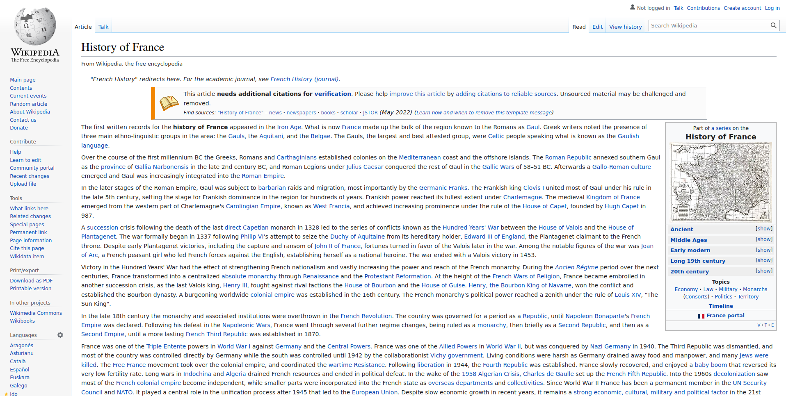
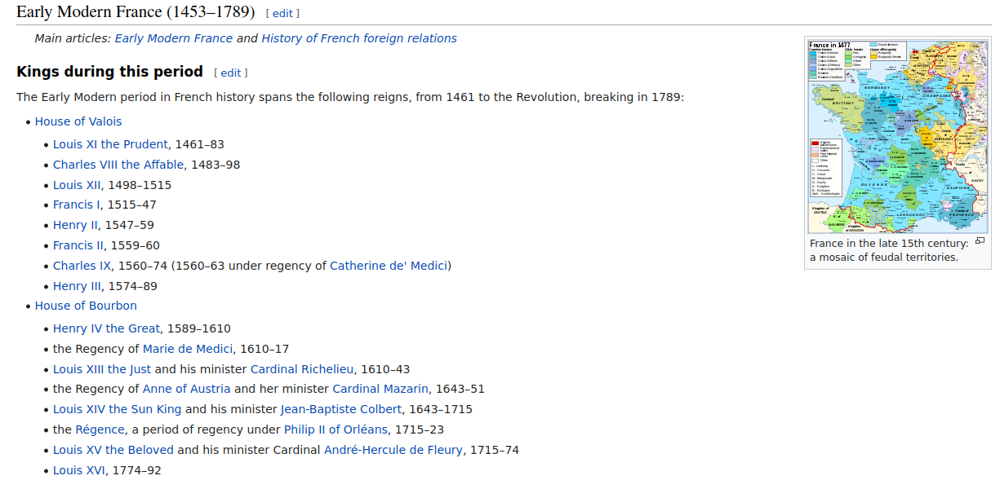
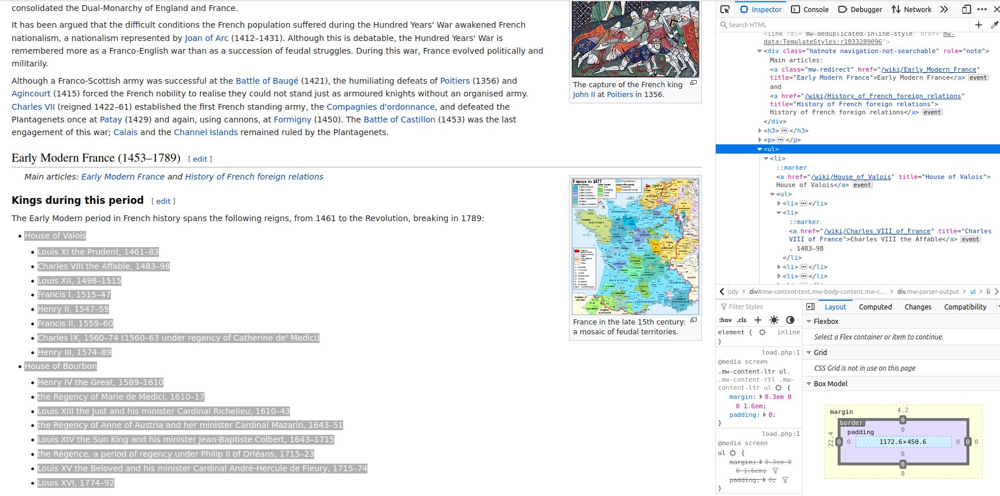
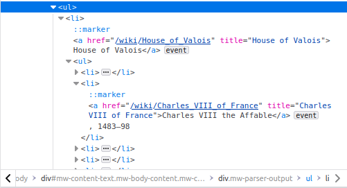
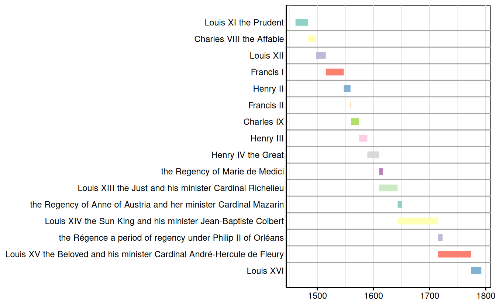
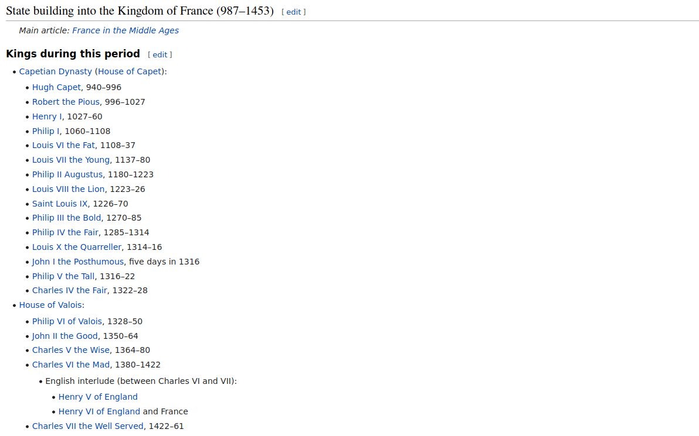
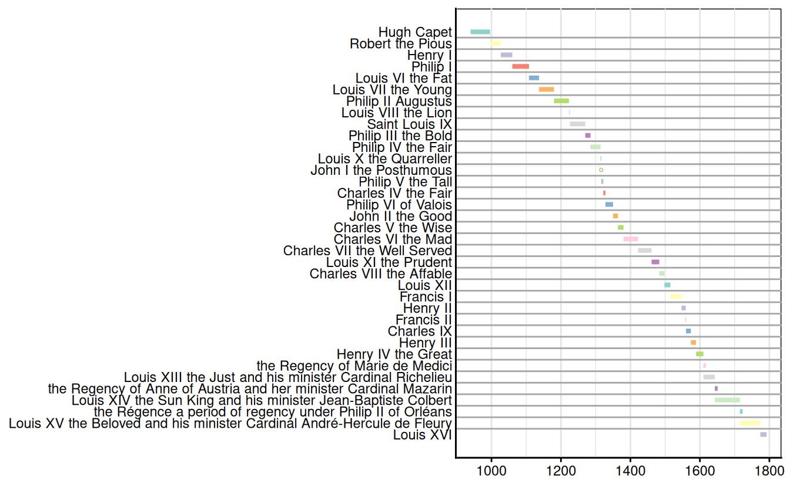

library(stringr)
library(scrapex)
library(rvest)
library(xml2)
library(dplyr)
library(lubridate)
library(vistime)
library(tibble)4 What you need to know about regular expressions
Before I set out to write this chapter I was hesitant to do it. I don’t consider myself an expert on regular expressions nor do I think I would be able to take you from beginner to expert on such a complicated topic. On top of that, there are dozens of excellent tutorials on regular expressions out there that would do the topic more justice than I would be able to. With that said, you cannot do web scraping without knowing some regular expression techniques. Most of the data you’ll extract from the web will need some type of massaging. Other times you’ll find the data you need will be a string, combined with other stuff. You’ll need to know that there are tools to clean this string and extract just what you need.
For that reason, I decided I wanted to write this chapter focusing only on what I think are the basics in regexp. Moreover, I wanted the chapter to use webscraping examples as soon as you had the basics in mind. These basics are the bare minimum you’ll need to clean the usual web scraping strings you’ll extract. This means that I’ll give you a very incomplete picture of what regexp can do but enough to get you up and running in a very short amount of time. If the reader is interested in the topic, I refer them to the chapter on strings from the book R For Data Science. That chapter will give you a more thorough introduction into the topic with more general applications. Without further ado, let’s begin.
4.1 Basic matches
Let’s load all the packages we’ll use in the chapter. Most of them are related to webscraping or data cleaning. stringr will be the package we’ll use for doing regular expressions. You’ll see that all of the functions of this package begin with str_, denoting that they are related to strings:
Regular expressions (regexp from now on) are a way for you to find patterns within strings. If you find the pattern, you can extract it or replace it in the original string. Let’s take a famous quote by Jorge Luis Borges and find the word “eighteenth” in the quote:
borges <- "I like hourglasses, maps, eighteenth century typography."
str_view_all(borges, "eighteenth", match = TRUE)[1] │ I like hourglasses, maps, <eighteenth> century typography.That’s one of the simplest regexp I can think of. That’s a regular expression right there: you’re matching only the word “eighteenth”. stringr has two functions which will be at the backbone of using regexp in R: str_replace_all and str_extract_all. The first one will replace a string with another string. For example:
str_replace_all(borges, "eighteenth", "[DATE]")[1] "I like hourglasses, maps, [DATE] century typography."It replaces the word eighteenth with [DATE].
str_extract_all will extract the portion of the string which had a match
str_extract_all(borges, "eighteenth")[[1]]
[1] "eighteenth"However, that’s not very handy since you know the word you want to match exactly. You’ll see the power of this later on.
4.2 The . placeholder
If I asked you to match all occurrences of eighteenth or Eighteenth how would you do it? In regexp there’s a placeholder . that matches any letter, number or any type of character. For example:
borges <- "I like hourglasses, maps, eighteenth Eighteenth century typography."
str_view_all(borges, ".ighteenth", match = TRUE)[1] │ I like hourglasses, maps, <eighteenth> <Eighteenth> century typography.The regexp I used is .ighteenth meaning that I want to match any character (.) followed directly by ighteenth. It matches both the capital letter word as well the lower case word. However, it would also match any other character, even empty spaces:
borges <- "I like hourglasses, maps, ighteenth century typography."
str_view_all(borges, ".ighteenth", match = TRUE)[1] │ I like hourglasses, maps,< ighteenth> century typography.4.3 Quantifiers
The . in regexp is very handy but also can be imprecise. The . is often used with + which means that the character . needs to be repeated one or more times. For example, say you want to extract the century from the phrase maps, [some century] century. In our example it’s easy because you know exactly the century. However, you might want to make it generic to extract any word between maps and century. You could try something like this:
borges_two_phrase <- c(
"I like hourglasses, maps, eighteenth century typography.",
"I like hourglasses, maps, seventeenth century typography."
)
str_view_all(borges_two_phrase, "maps, . century")[1] │ I like hourglasses, maps, eighteenth century typography.
[2] │ I like hourglasses, maps, seventeenth century typography.Nothing was matched. Why? Because we’re saying we want to match something like this: maps, [a] century.. Replace [a] with whatever character you want and that’s what you’re matching. Of course, that doesn’t have a match anywhere in the string. What we want instead is this:
str_view_all(borges_two_phrase, "maps, .+ century")[1] │ I like hourglasses, <maps, eighteenth century> typography.
[2] │ I like hourglasses, <maps, seventeenth century> typography.This is saying: match the part maps, followed by any character (.) repeated one or more times (+) which is followed by century.
4.4 Escaping .
. is useful because it can be used as a general placeholder. However, what if you want to match a literal .? If I asked you to match the first sentence of this phrase without specifying “hourglasses”, what regexp could you use?
borges <- "I like hourglasses. I also like maps, eighteenth century typography"
str_view_all(borges, "I like .+")[1] │ <I like hourglasses. I also like maps, eighteenth century typography>I like .+ is almost there. It says: match the phrase I like followed by any character repeated one or more times. However, that matches the entire phrase because it doesn’t know we want it to stop at the first ., right after hourglasses. To match a literal . you need to prepend it with two \\. It would look like this: I like .+\\.. This reads like this:
- Match the phrase
I like - Followed by any character that is repeated one or more times (
.+) - Until there is a literal dot (
\\.)
Let’s apply it:
str_view_all(borges, "I like .+\\.")[1] │ <I like hourglasses.> I also like maps, eighteenth century typographyBe aware that you need to prepend \\ in front of any special character in regexp. For example, if you wanted to match the quantifier + literally, you’ll need to do it like this: \\+. There are a bunch of special characters in regexp but you’ll just need to know a few like (, ), +, ., $, ^ or |.
4.5 The OR (|) operator
To make your regexp generic, you’ll often want to match either one regexp or another. The | allows you to do it very succinctly. Suppose we want to extract the century from the vector below. We can do it like this:
borges_two_phrase <- c(
"I like hourglasses, maps, eighteenth century typography.",
"I like hourglasses, maps, seventeenth century typography."
)
res <- str_extract_all(borges_two_phrase, "maps, .+ century")
res[[1]]
[1] "maps, eighteenth century"
[[2]]
[1] "maps, seventeenth century"However, we want to extract only the actual century and replace maps, and century. We can use a regexp to say: replace either maps, or century with an empty string, which will give you only the actual century. In our case the regexp would be like this: maps, | century. Using str_replace_all we can match that expression and replace it with an empty string:
res %>% str_replace_all("maps, | century", "")[1] "eighteenth" "seventeenth"4.6 Anchors
Anchors are also another feature of regexp. ^ is used to match the start of the string and $ to match the end of the string. For example, to match the first letter of the entire text you could use:
borges <- "I like hourglasses. I also like maps, eighteenth century typography"
str_view_all(borges, "^.", match = TRUE)[1] │ <I> like hourglasses. I also like maps, eighteenth century typographyConversely, to match the last letter of a string:
str_view_all(borges, ".$", match = TRUE)[1] │ I like hourglasses. I also like maps, eighteenth century typograph<y>This might seem like something which doesn’t have much use but it’s actually very handy. Take this text as an example:
borges_long <- c(
"I like cars. I like hourglasses, maps, eighteenth century typography.",
"I like computers. I like hourglasses, maps, eighteenth century typography."
)Both phrases have “I like” at the beginning but also have “I like” after the end of the first sentence. Using what we know until now won’t be enough:
str_view_all(borges_long, "^I like .+")[1] │ <I like cars. I like hourglasses, maps, eighteenth century typography.>
[2] │ <I like computers. I like hourglasses, maps, eighteenth century typography.>To achieve what we want we could use the trick to match a literal dot and add the anchor of the beginning:
str_view_all(borges_long, "^I like .+\\.")[1] │ <I like cars. I like hourglasses, maps, eighteenth century typography.>
[2] │ <I like computers. I like hourglasses, maps, eighteenth century typography.>4.7 Matching spaces
You can also match spaces in regexp and replace them:
str_view_all(borges, " ")[1] │ I< >like< >hourglasses.< >I< >also< >like< >maps,< >eighteenth< >century< >typographySince spaces come in different ways (new lines or tabs), you can also use the special character \\s:
str_replace_all(borges, "\\s", "")[1] "Ilikehourglasses.Ialsolikemaps,eighteenthcenturytypography"4.8 Special classes
Aside from the magic of ., regexp has a set of special tools for matching general patterns. Let’s touch upon three of these.
\\d: matches digits
Suppose you’re scraping a list of countries and their GDP. After scraping that data you end up with this:
gdp <- c(
"Afghanistan 516 US dollars",
"Albania 6494 US dollars",
"Algeria 3765 US dollars",
"American Samoa 12844 US dollars",
"Andorra 43047 US dollars"
)The keyword \\d will match a single digit. So for example, if we wanted to match the age of a child in a string (Angel is 8 years old), writing a regexp like \\d will match that 8. For example:
str_view_all("Angel is 8 years old", "\\d")[1] │ Angel is <8> years oldIf we matched instead someone older, \\d will match each digit separately:
str_view_all(
c("Angel is 8 years old", "Martha is 56 years old"),
"\\d"
)[1] │ Angel is <8> years old
[2] │ Martha is <5><6> years oldIf you pay close attention, the regexp matched 56 but each digit separately. However, we could combine this with the quantifier + to match one or more digits. For example:
str_view_all(
c("Angel is 8 years old", "Martha is 56 years old"),
"\\d+"
)[1] │ Angel is <8> years old
[2] │ Martha is <56> years oldGoing back to our gdp example, we can extract the GDP of every country with the regexp \\d+, meaning “extract any number that is repeated one or more times”:
gdp_chr <- str_extract_all(gdp, "\\d+")
lapply(gdp_chr, as.numeric)[[1]]
[1] 516
[[2]]
[1] 6494
[[3]]
[1] 3765
[[4]]
[1] 12844
[[5]]
[1] 43047[abc]: matches a, b, or c.
Regexp also has a cool shortcut to extend the regexp | (or) and make it more flexible. For example, say we wanted to match all retirement ages of men in Europe that are between 67 and 69:
retirement <-
# Read in our scrapex example with retirement ages
retirement_age_europe_ex() %>%
read_html() %>%
html_table() %>%
.[[2]]
retirement# A tibble: 41 × 6
Country Men Women Year Notes References
<chr> <chr> <chr> <chr> <chr> <chr>
1 Albania 65 61 2020 "" [1]
2 Austria 65 60 2018 "In … [1][3]
3 Belarus 62.5 57.5 2021 "By … [5]
4 Belgium 65 65 2018 "In … [5]
5 Bosnia and Herzegovina 65 65 2011 "" [1]
6 Bulgaria 64 (and 4 months) 61 (and 8 mo… 2021 "In … [2]
7 Croatia 65 62 2018 "By … [2]
8 Cyprus 65 65 2018 "" [1][3]
9 Czech Republic 63 (and 4 months) 58 (and 8 mo… 2018 "In … [7]
10 Denmark 67 67 2022 "In … [3][5]
# ℹ 31 more rowsOne way is to explicitly use | to match all ages like this: (67|68|69). Instead, using brackets ([]), regexp will match everything inside as if it were |. So for example:
str_view_all(retirement$Men, "6[789]") [1] │ 65
[2] │ 65
[3] │ 62.5
[4] │ 65
[5] │ 65
[6] │ 64 (and 4 months)
[7] │ 65
[8] │ 65
[9] │ 63 (and 4 months)
[10] │ <67>
[11] │ 63 (and 9 months)
[12] │ 65
[13] │ 62
[14] │ 65 (and 7 months)
[15] │ <67>
[16] │ 65
[17] │ <67>
[18] │ 66
[19] │ <67>
[20] │ 63 (and 6 months)
... and 21 moreThis regexp will match the number 6 followed either by 7, 8, or 9. If these numbers are sequential (as it is now) it has additional shortcuts to make it simpler:
str_view_all(retirement$Men, "6[7-9]") [1] │ 65
[2] │ 65
[3] │ 62.5
[4] │ 65
[5] │ 65
[6] │ 64 (and 4 months)
[7] │ 65
[8] │ 65
[9] │ 63 (and 4 months)
[10] │ <67>
[11] │ 63 (and 9 months)
[12] │ 65
[13] │ 62
[14] │ 65 (and 7 months)
[15] │ <67>
[16] │ 65
[17] │ <67>
[18] │ 66
[19] │ <67>
[20] │ 63 (and 6 months)
... and 21 moreNote that [] works the same way for anything: numbers, letters, punctuation, spaces, etc..
[^abc]: matches anything except a, b, or c.
Similarly to the previous example [abc], [^abc] will match anything except these letters. So recycling our previous retirement example, if we wanted to match all ages except those after 65, the regexp would be like this:
str_view_all(retirement$Men, "6[^5-9]") [1] │ 65
[2] │ 65
[3] │ <62>.5
[4] │ 65
[5] │ 65
[6] │ <64> (and 4 months)
[7] │ 65
[8] │ 65
[9] │ <63> (and 4 months)
[10] │ 67
[11] │ <63> (and 9 months)
[12] │ 65
[13] │ <62>
[14] │ 65 (and 7 months)
[15] │ 67
[16] │ 65
[17] │ 67
[18] │ 66
[19] │ 67
[20] │ <63> (and <6 >months)
... and 21 moreAll ages which are below 65 will be matched.
4.9 Case study: mapping the kings of France
scrapex contains a copy of the Wikipedia page “History of France”. Throughout all of the historical details, this website has several sections where it outlines all kings/queens of France and the years they were in power. In this case study we’ll plot a timeline plot, where we’ll be able to visualize the length of the reign of each king.
Let’s load and read the website:
history_france_html <- history_france_ex()
history_france <- read_html(history_france_html)browseURL(prep_browser(history_france_html))This website is your standard Wikipedia webpage: it has dozens of sections and a lengthy description of historical facts of France.

If you scroll down to the section “Early Modern France (1453 - 1789)” you’ll find that there’s the history of all kings/queens during that period:

We want to extract the names of each one and their corresponding years of reign. Let’s open up the developer tools in that specific chunk of the website:

More specifically, all the text we’re interested in is inside this ul tag:

However, ul tags are very common and subsetting only for ul tags will bring many matches. Instead what we want is something like: bring me all the ul tags that have an a tag that has a title that contains the phrase “House of Valois”. Let’s break it down and write it:
//ul: bring allultags from the document[.//a]: subset allatags that are below allultags (notice the.)[contains(@title, "House of Valois")]: where thisatag needs to have atitleattribute that contains “House of Valois”.
Let’s put it all together and see if it worked:
history_france %>%
xml_find_all("//ul[.//a[contains(@title, 'House of Valois')]]"){xml_nodeset (2)}
[1] <ul>\n<li>\n<a href="https://en.wikipedia.org/wiki/Capetian_Dynasty" clas ...
[2] <ul>\n<li>\n<a href="https://en.wikipedia.org/wiki/House_of_Valois" title ...There we are! The second slot contains the ul tag we want (because we can see the Valois right in the href). We can redo the previous XPath to pick only the second node and we should be done:
all_txt <-
history_france %>%
xml_find_all("//ul[.//a[contains(@title, 'House of Valois')]][2]") %>%
xml_text()
all_txt[1] "House of Valois\nLouis XI the Prudent, 1461–83\nCharles VIII the Affable, 1483–98\nLouis XII, 1498–1515\nFrancis I, 1515–47\nHenry II, 1547–59\nFrancis II, 1559–60\nCharles IX, 1560–74 (1560–63 under regency of Catherine de' Medici)\nHenry III, 1574–89\nHouse of Bourbon\nHenry IV the Great, 1589–1610\nthe Regency of Marie de Medici, 1610–17\nLouis XIII the Just and his minister Cardinal Richelieu, 1610–43\nthe Regency of Anne of Austria and her minister Cardinal Mazarin, 1643–51\nLouis XIV the Sun King and his minister Jean-Baptiste Colbert, 1643–1715\nthe Régence, a period of regency under Philip II of Orléans, 1715–23\nLouis XV the Beloved and his minister Cardinal André-Hercule de Fleury, 1715–74\nLouis XVI, 1774–92"The text is pretty dirty as all the text is concatenated into one single string but it contains all the kings/queens and their period of reign. Let’s clean it up. First thing we want to do is split the string based on the character \n. If you take a close look at the string all the names of each person are separated by \n. Let’s apply it and see how it looks:
all_txt <-
all_txt %>%
str_split("\n") %>%
.[[1]]
all_txt [1] "House of Valois"
[2] "Louis XI the Prudent, 1461–83"
[3] "Charles VIII the Affable, 1483–98"
[4] "Louis XII, 1498–1515"
[5] "Francis I, 1515–47"
[6] "Henry II, 1547–59"
[7] "Francis II, 1559–60"
[8] "Charles IX, 1560–74 (1560–63 under regency of Catherine de' Medici)"
[9] "Henry III, 1574–89"
[10] "House of Bourbon"
[11] "Henry IV the Great, 1589–1610"
[12] "the Regency of Marie de Medici, 1610–17"
[13] "Louis XIII the Just and his minister Cardinal Richelieu, 1610–43"
[14] "the Regency of Anne of Austria and her minister Cardinal Mazarin, 1643–51"
[15] "Louis XIV the Sun King and his minister Jean-Baptiste Colbert, 1643–1715"
[16] "the Régence, a period of regency under Philip II of Orléans, 1715–23"
[17] "Louis XV the Beloved and his minister Cardinal André-Hercule de Fleury, 1715–74"
[18] "Louis XVI, 1774–92" Better. We have 16 kings/queens but there are two slots that separate them by houses: House of Valois and House of Bourbon. We probably want to remove these two strings from the vector because we’re not interested in distinguishing them for now. For that we’ll use the regexp ^House which matches any string that begins with House. We’ll combine it with str_detect which returns TRUE or FALSE if there’s a match. We’ll use that to exclude these two strings from the vector:
all_txt <- all_txt[!str_detect(all_txt, "^House")]
all_txt [1] "Louis XI the Prudent, 1461–83"
[2] "Charles VIII the Affable, 1483–98"
[3] "Louis XII, 1498–1515"
[4] "Francis I, 1515–47"
[5] "Henry II, 1547–59"
[6] "Francis II, 1559–60"
[7] "Charles IX, 1560–74 (1560–63 under regency of Catherine de' Medici)"
[8] "Henry III, 1574–89"
[9] "Henry IV the Great, 1589–1610"
[10] "the Regency of Marie de Medici, 1610–17"
[11] "Louis XIII the Just and his minister Cardinal Richelieu, 1610–43"
[12] "the Regency of Anne of Austria and her minister Cardinal Mazarin, 1643–51"
[13] "Louis XIV the Sun King and his minister Jean-Baptiste Colbert, 1643–1715"
[14] "the Régence, a period of regency under Philip II of Orléans, 1715–23"
[15] "Louis XV the Beloved and his minister Cardinal André-Hercule de Fleury, 1715–74"
[16] "Louis XVI, 1774–92" There we go, 16 names and their corresponding period. The task we’re after is to extract two things from this vector: the years they were in power and their names. Let’s first extract the years. We could do that with the regexp \\d+ that will extract all digits from each of the strings. However, this will also extract the extra years for Charles IX inside the parenthesis:
all_txt[7][1] "Charles IX, 1560–74 (1560–63 under regency of Catherine de' Medici)"Since these years are just a clarification, we can remove the parenthesis and everything inside it to just keep the first period next to his name. Let’s think of what a regexp like this can look like:
- Parentheses are special characters in regexp so to match them we have to escape them like this:
\\(or\\) - We don’t care what text is inside the parentheses so we can just use the
.placeholder with+to match as many characters as are needed
The final regexp can be something like this: \\(.+\\). Match any parentheses (literal) that have any text inside. Let’s replace it with an empty string:
all_txt <-
all_txt %>%
str_replace_all(pattern = "\\(.+\\)", replacement = "")
all_txt [1] "Louis XI the Prudent, 1461–83"
[2] "Charles VIII the Affable, 1483–98"
[3] "Louis XII, 1498–1515"
[4] "Francis I, 1515–47"
[5] "Henry II, 1547–59"
[6] "Francis II, 1559–60"
[7] "Charles IX, 1560–74 "
[8] "Henry III, 1574–89"
[9] "Henry IV the Great, 1589–1610"
[10] "the Regency of Marie de Medici, 1610–17"
[11] "Louis XIII the Just and his minister Cardinal Richelieu, 1610–43"
[12] "the Regency of Anne of Austria and her minister Cardinal Mazarin, 1643–51"
[13] "Louis XIV the Sun King and his minister Jean-Baptiste Colbert, 1643–1715"
[14] "the Régence, a period of regency under Philip II of Orléans, 1715–23"
[15] "Louis XV the Beloved and his minister Cardinal André-Hercule de Fleury, 1715–74"
[16] "Louis XVI, 1774–92" Perfect, we removed the extra parentheses so we can now extract all years:
res <-
all_txt %>%
str_extract_all("\\d+")
res[[1]]
[1] "1461" "83"
[[2]]
[1] "1483" "98"
[[3]]
[1] "1498" "1515"
[[4]]
[1] "1515" "47"
[[5]]
[1] "1547" "59"
[[6]]
[1] "1559" "60"
[[7]]
[1] "1560" "74"
[[8]]
[1] "1574" "89"
[[9]]
[1] "1589" "1610"
[[10]]
[1] "1610" "17"
[[11]]
[1] "1610" "43"
[[12]]
[1] "1643" "51"
[[13]]
[1] "1643" "1715"
[[14]]
[1] "1715" "23"
[[15]]
[1] "1715" "74"
[[16]]
[1] "1774" "92" Great, the regexp worked but there are additional problems. For kings/queens which reigned in a single century, the end period only has the last two years. For those whose kingship lasted between two centuries, the two years are written explicitly in format YYYY. We have to correct this manually. One way to do it would be like this:
convert_time_period <- function(x) {
start_year <- x[1]
end_year <- x[2]
# If end year has only 2 digits
if (nchar(end_year) == 2) {
# Extract the first two years from the start year
end_year_prefix <- str_sub(start_year, 1, 2)
# Paste together the correct year for the end year
end_year <- paste0(end_year_prefix, end_year)
}
# Replace correct end year
x[2] <- end_year
as.numeric(x)
}This function accepts the character vector of length two containing both the start and end year of the period in which they reigned. The function checks if the number of characters of the end year has only two digits, and if it does, it subsets the first two digits from the start year and pastes them together. Let’s apply the function in a loop for each of the years:
sequence_kings <- lapply(res, convert_time_period)
sequence_kings[[1]]
[1] 1461 1483
[[2]]
[1] 1483 1498
[[3]]
[1] 1498 1515
[[4]]
[1] 1515 1547
[[5]]
[1] 1547 1559
[[6]]
[1] 1559 1560
[[7]]
[1] 1560 1574
[[8]]
[1] 1574 1589
[[9]]
[1] 1589 1610
[[10]]
[1] 1610 1617
[[11]]
[1] 1610 1643
[[12]]
[1] 1643 1651
[[13]]
[1] 1643 1715
[[14]]
[1] 1715 1723
[[15]]
[1] 1715 1774
[[16]]
[1] 1774 1792Perfect, it worked. All the kings/queens have their corresponding start/end years in the correct format. Next thing we need is to extract all the names. Since all names follow the same pattern where the name of the king/queen is first, then a comma and then the year, we can come up with a regexp to extract it. Here’s one approach:
^: from the beginning of the string.+: match all characters repeated one or more times,: until the first comma
Let’s try it out:
all_txt %>%
str_extract("^.+,") [1] "Louis XI the Prudent,"
[2] "Charles VIII the Affable,"
[3] "Louis XII,"
[4] "Francis I,"
[5] "Henry II,"
[6] "Francis II,"
[7] "Charles IX,"
[8] "Henry III,"
[9] "Henry IV the Great,"
[10] "the Regency of Marie de Medici,"
[11] "Louis XIII the Just and his minister Cardinal Richelieu,"
[12] "the Regency of Anne of Austria and her minister Cardinal Mazarin,"
[13] "Louis XIV the Sun King and his minister Jean-Baptiste Colbert,"
[14] "the Régence, a period of regency under Philip II of Orléans,"
[15] "Louis XV the Beloved and his minister Cardinal André-Hercule de Fleury,"
[16] "Louis XVI," Great, all names were matched correctly. We just have to replace the comma with an empty space to make it cleaner:
names_kings <-
all_txt %>%
str_extract("^.+,") %>%
str_replace_all(",", "")
names_kings [1] "Louis XI the Prudent"
[2] "Charles VIII the Affable"
[3] "Louis XII"
[4] "Francis I"
[5] "Henry II"
[6] "Francis II"
[7] "Charles IX"
[8] "Henry III"
[9] "Henry IV the Great"
[10] "the Regency of Marie de Medici"
[11] "Louis XIII the Just and his minister Cardinal Richelieu"
[12] "the Regency of Anne of Austria and her minister Cardinal Mazarin"
[13] "Louis XIV the Sun King and his minister Jean-Baptiste Colbert"
[14] "the Régence a period of regency under Philip II of Orléans"
[15] "Louis XV the Beloved and his minister Cardinal André-Hercule de Fleury"
[16] "Louis XVI" Alright, with that out of the way, the rest is combining the years and names together into a data frame. Let’s loop over sequence_kings and convert them into data frames. Combine all of them with the king names and convert all dates into date objects in R:
# Combine into data frames
start = sapply(sequence_kings, `[[`, 1)
end = sapply(sequence_kings, `[[`, 2)
final_kings <- tibble(event=names_kings, start=start, end=end) |>
mutate_if(is.numeric, ~make_date(., 1, 1))
final_kings# A tibble: 16 × 3
event start end
<chr> <date> <date>
1 Louis XI the Prudent 1461-01-01 1483-01-01
2 Charles VIII the Affable 1483-01-01 1498-01-01
3 Louis XII 1498-01-01 1515-01-01
4 Francis I 1515-01-01 1547-01-01
5 Henry II 1547-01-01 1559-01-01
6 Francis II 1559-01-01 1560-01-01
7 Charles IX 1560-01-01 1574-01-01
8 Henry III 1574-01-01 1589-01-01
9 Henry IV the Great 1589-01-01 1610-01-01
10 the Regency of Marie de Medici 1610-01-01 1617-01-01
11 Louis XIII the Just and his minister Cardinal Richelieu 1610-01-01 1643-01-01
12 the Regency of Anne of Austria and her minister Cardin… 1643-01-01 1651-01-01
13 Louis XIV the Sun King and his minister Jean-Baptiste … 1643-01-01 1715-01-01
14 the Régence a period of regency under Philip II of Orl… 1715-01-01 1723-01-01
15 Louis XV the Beloved and his minister Cardinal André-H… 1715-01-01 1774-01-01
16 Louis XVI 1774-01-01 1792-01-01Great job, that’s our final data frame. We can feed it into the gg_vistime function from the package vistime to visualize the timeline:
gg_vistime(final_kings, col.group = "event", show_labels = FALSE)
4.10 Exercises
- Extend our case study to the period “State building into the Kingdom of France (987–1453)”:

Note that this will require you to change some of our previous code and think of slightly different regexp strategies. When done, merge it with our results of the case study to produce the complete lineage of France’s history of monarchy.

- Take a look at this regexp:
I like .+\\.. It says: match the phraseI likefollowed by any character (.) repeated one or more times (+) until you find a dot (\\.). When applied to the string below it extracts the entire string:
text <- "I like hourglasses. I also like maps, eighteenth century typography."
str_extract_all(text, "I like .+\\.")[[1]][1] "I like hourglasses. I also like maps, eighteenth century typography."Instead, what we want is:
[1] "I like hourglasses."Look up what ? does in regexp and come up with a way to fix the regexp to obtain what we want.
- Can you extract all unique royal houses from the Wikipedia document? That is, produce a vector like this one:
[1] "House of Capet" "House of Valois" "House of Plantagenet"
[4] "House of Bourbon" "House of Guise" "House of Toulouse"
[7] "House of Hohenstaufen" "House of Welf" "House of Brandenburg"
[10] "House of Lancaster" "House of Bonaparte" "House of Orléans" Hint: No need to use any XPath, use xml_text() on the entire document to extract all of the text of the website and apply regexp to grab the houses. You’ll need to use ? and also figure out what [:punct:] does in regexp.